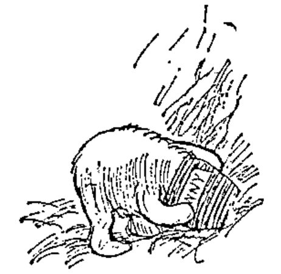
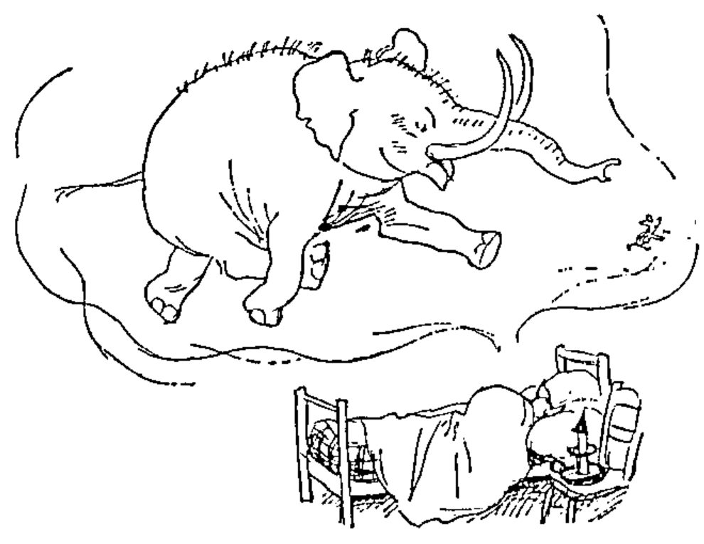

Editorial: In which Piglet meets a Heffalump
Vector 5:4, page 3
Transcribed from the printed issue; not yet reviewed. Read it in the PDF of the issue, page 3
One day, when Christopher Robin and Winnie-the-Pooh and Piglet were all talking together, Christopher Robin finished the mouthful he was eating and said carelessly: "I saw a Heffalump today, Piglet."
"What was it doing?" asked Piglet.
"Just lumping along." said Christopher Robin. "I don't think it saw me."
"I saw one once," said Piglet. "At least I think I did," he said. "Only perhaps it wasn't."
"So did I," said Pooh, wondering what a Heffalump was like.
"You don't often see them," said Christopher Robin carelessly.
"Not now," said Piglet.
"Not at this time of year," said Pooh.
Avid readers of the works of A.A. Milne may like to follow up the reference! Of course the outcome was the construction of a Cunning Trap along the lines of a Very Deep Pit into which the Heffalump would fall. The outcome was rather different …

So to the substance of this Editorial: why can't someone write a second-generation APL which is not littered with Heffalump traps? There are two particular pitfalls into which I still occasionally fall, and from which I have wasted many valuable hours extracting bemused colleagues. Here is a line of code to illustrate the worst:
How did you read this? I bet you assumed that PLUS was a dyadic function, which returned a result for neat output by monadic function DISPLAY?! You comprehended the line in two very different ways: firstly you used your knowledge of English to make sense of the context of the words, then you confirmed your supposition with a quick check that it did indeed correspond to a valid APL expression. In plain old VS APL the syntax of the language mapped rather well to the syntax of standard English, and all was well.
Just suppose for a minute that PLUS is actually monadic! The line of code is still valid, but DISPLAY now gets a 2-element vector to handle. This I can live with. Suppose we make DISPLAY a variable (or a niladic function) e.g. DISPLAY←3 … PLUS will now add the vector 3 2 to 2 (if it was dyadic), or it will just return its right argument (if monadic), and the result of the whole expression will be the vector 3 2 2. Of course, we could imagine the case where PLUS←5 …
This (apparently) simple APL expression has the scope for an enormous variety of mis-interpretations! The problem is that the information you use to decode it will depend on the way you read the English language. In contrast the interpreter has access to a deal of privileged internal information (e.g. it can easily check whether an object is a function or a variable) which is not available on casual inspection of the code. The example which follows is quite real, and wasted more time than I care to admit:
In the SQL-style syntax of our in-house 4GL, this looks absolutely valid. AND is a dyadic cover for ∧. WHERE does the obvious compression (returning its left argument to keep things going), and SHOW puts the result on the screen. Easy eh? Suppose I told you that the expression failed on a LENGTH ERROR in AND? However, when taken apart:
… it worked fine!! One clue was that the whole thing was taking place inside a function, and again it all worked as you would expect if you cleared the stack and ran it from APL. The mists slowly began to clear when I noticed that WHERE had actually been localised, and assigned to the boolean result from a previous expression. The consequence was that APL was seeing:
… let us be thankful that TIME did not contain exactly three elements, otherwise this hideous piece of nonsense would have 'worked' and caused even more confusion somewhere else!
"So at last he lifted up his head, jar and all, and made a loud roaring noise of Sadness and Despair … and it was at that moment that Piglet looked down."
So much for Strands. These are the first and worst of the Heffalump traps. When I read in Peter's review of APL*PLUS-II that: "The single most important use for Nested Arrays is to pass multiple parameters into functions ….", I get very concerned. How on earth am I to tell which are the functions, and which are the arguments of which functions? "Bother" said Pooh!!
Trap No.2 is much more insidious, but equally nasty. It is called 'mixed' or 'heterogeneous' arrays. Here is how it works: you have a simple little print routine which starts with PAGE←66 132⍴' ' and drops blocks of your report into the appropriate parts of the page. You make a minor change to this routine, which involves inserting a page number in the top left hand corner:
… but unfortunately you forget to format PGCT. Any sensible language (I count VS APL among the sensible languages) would complain about this, but dear old APL*PLUS just soaks up a lot more storage, puts the lights out in computer room, and carries on.
Some little while later, in a different function (with good modular design you returned PAGE as an explicit result), you try to write this harmless-looking array to the SYSOUT queue via an AP. *** SPLAT *** it duly goes, typically with something helpful like SV SPACE QUOTA EXCEEDED. You check the shape of PAGE, you display it on the screen, you utter various carefully selected incantations, but can you see what is wrong? Even when you learn the trick ∧/,PAGE∊⎕AV and find the rogue characters, you can still waste a surprising amount of time tracking down the missing ⍕.
Maybe I'm getting even older and even crabbier, but I would find it much easier to stand up and justify plain old VS APL (with all its limitations) as a good language for serious commercial work, than I would to defend a language which regularly sets traps like this. As E.H. Shepard so aptly drew it …
